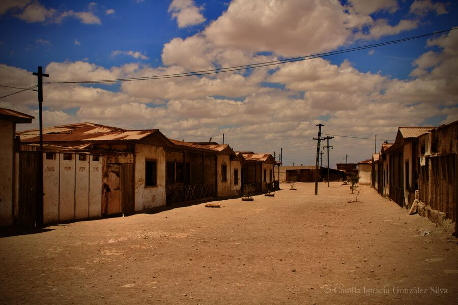
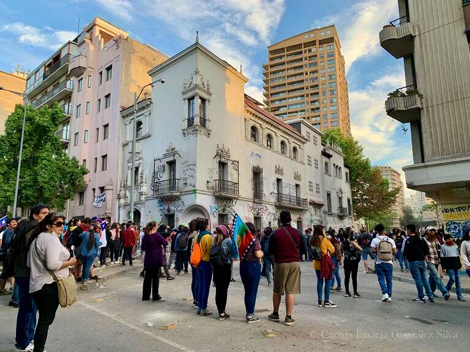
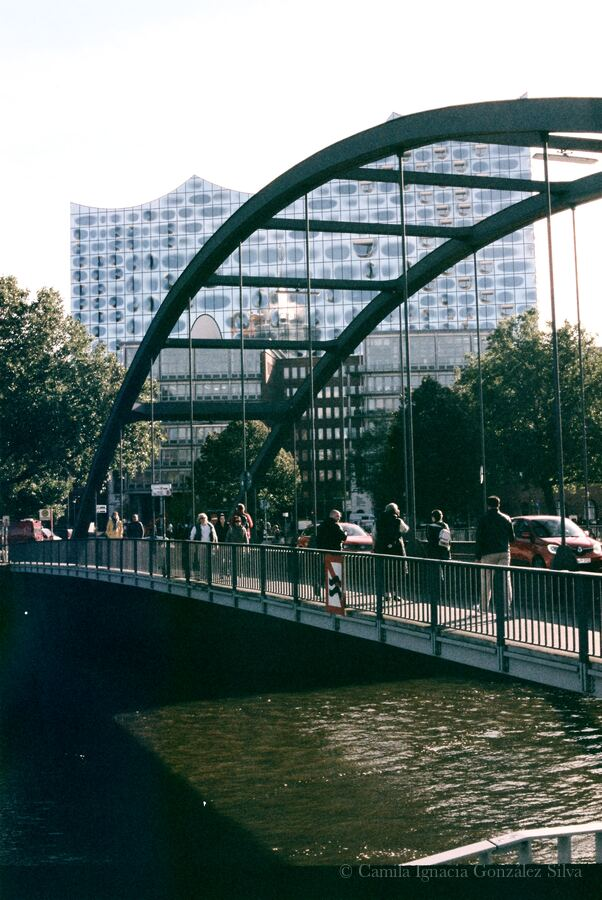

About Sobre mí
I am a Chilean sociologist working in social research with qualitative and mixed methods. I am especially interested in social inequalities, housing, everyday life, and processes of social organization. I see gender and intersectional perspectives as essential for analysing complex problems such as inequalities, paying attention to class in its material and symbolic dimensions, as well as to the discourses, institutions, and forms of social organization that interact in their different configurations.
I also value collective work as part of how I learn, research, and produce knowledge. I spend much of my time reading, working on the computer, and learning about digital tools that can strengthen social research and its communication. In my free time, I am also interested in photography and in taking analogue and digital pictures as a way of exploring social perspectives. I also enjoy experimenting with analogue collage. For that reason, I want this page to function not only as a portfolio, but also as a useful resource/blog for anyone who may want to explore the materials gathered here.
Soy socióloga, chilena, y trabajo en investigación social con metodologías cualitativas y mixtas. Me interesan especialmente las desigualdades sociales, la vivienda, la vida cotidiana y los procesos de organización social. Considero que para abordar problemas complejos como las desigualdades es fundamental una perspectiva de género e interseccional, atenta a la clase en sus dimensiones materiales y simbólicas, así como a los discursos, las instituciones y las formas de organización social que interactúan en sus distintas configuraciones.
También valoro el trabajo colectivo como parte de mi forma de aprender, investigar y producir conocimiento. Paso gran parte de mi tiempo leyendo, trabajando en el computador y aprendiendo sobre herramientas digitales que puedan fortalecer la investigación social y su comunicación. En mis tiempos libres también me interesa aprender sobre fotografía y tomar fotos análogas y digitales como una forma de explorar miradas sobre lo social. También me gusta experimentar con el collage análogo. Por eso, me interesa que esta página funcione no solo como un portafolio, sino también como un recurso/blog útil para quien quiera consultar los materiales reunidos aquí.
About Sobre mí
I am a Chilean sociologist working in social research with qualitative and mixed methods. I am especially interested in social inequalities, housing, everyday life, and processes of social organization.
I also value collective work as part of how I learn, research, and produce knowledge. I spend much of my time reading, working on the computer, and learning about digital tools that can strengthen social research and its communication. In my free time, I am also interested in photography and in taking analogue and digital pictures as a way of exploring social perspectives. I also enjoy experimenting with analogue collage. For that reason, I want this page to function not only as a portfolio, but also as a useful resource for anyone who may want to explore the materials gathered here.
Soy socióloga chilena y trabajo en investigación social con metodologías cualitativas y mixtas. Me interesan especialmente las desigualdades sociales, la vivienda, la vida cotidiana y los procesos de organización social.
También valoro el trabajo colectivo como parte de mi forma de aprender, investigar y producir conocimiento. Paso gran parte de mi tiempo leyendo, trabajando en el computador y aprendiendo sobre herramientas digitales que puedan fortalecer la investigación social y su comunicación. En mis tiempos libres también me interesa aprender sobre fotografía y tomar fotos análogas y digitales como una forma de explorar miradas sobre lo social. También me gusta experimentar con el collage análogo. Por eso, me interesa que esta página funcione no solo como un portafolio, sino también como un recurso útil para quien quiera consultar los materiales reunidos aquí.
Research Interests Intereses de investigación
My research interests lie at the intersection of social inequalities, economic sociology, housing, everyday life, and processes of social organization. I am particularly interested in how gender and intersectional perspectives help to analyse complex configurations of inequality, paying attention to class in its material and symbolic dimensions, as well as to the discourses, institutions, and forms of social organization that shape everyday life.
I am also interested in visual and digital methodologies for social research. This includes the use of R and programming to organize and visualize information, as well as photography and visual archives as ways of observing territory, material environments, and social life. In the section Visual Notes, you will find some of these ongoing explorations.
Mis intereses de investigación se sitúan en la intersección entre desigualdades sociales, sociología económica, vivienda, vida cotidiana y procesos de organización social. Me interesa particularmente cómo una perspectiva de género e interseccional permite analizar configuraciones complejas de desigualdad, atendiendo a la clase en sus dimensiones materiales y simbólicas, así como a los discursos, las instituciones y las formas de organización social que configuran la vida cotidiana.
También me interesan las metodologías visuales y digitales para la investigación social. Esto incluye el uso de R y la programación para organizar y visualizar información, así como la fotografía y los archivos visuales como formas de observar el territorio, los entornos materiales y la vida social. En la sección Notas visuales encontrarás parte de estas exploraciones en curso.

Visual Notes Notas visuales
A small visual archive of photographs and visual observations connected to my interest in territory, everyday life, and visual methodologies. This section brings together selected images as part of an ongoing exploration of urban textures, material environments, and forms of social observation.
Un pequeño archivo visual de fotografías y observaciones visuales vinculado a mi interés por el territorio, la vida cotidiana y las metodologías visuales. Esta sección reúne una selección de imágenes como parte de una exploración continua sobre texturas urbanas, entornos materiales y formas de observación social.



Selected Projects Proyectos en los que he participado
Family Financial Socialization in Chile Socialización financiera familiar en Chile
I participated, within the framework of FONDECYT Project No. 1220039, in research on financial socialization, affective grammars, and everyday economic practices in moderate-income Chilean households.
Participé, en el marco del Proyecto FONDECYT N.º 1220039, en una investigación sobre socialización financiera, gramáticas afectivas y prácticas económicas cotidianas en hogares chilenos de ingresos moderados.
Interculturality, Cinema, and School Inclusion Interculturalidad, cine e inclusión escolar
Qualitative and mixed-methods research on cinema, intercultural experiences, and social inclusion in public schools.
Investigación cualitativa y con métodos mixtos sobre cine, experiencias interculturales e inclusión social en escuelas públicas.
Collective Projects Proyectos colectivos
Collective Mapping Bulletin with Colectiva Jengibre Boletín de mapeo colectivo con Colectiva Jengibre
A 2019 participatory bulletin developed with Colectiva Jengibre in Puente Alto, documenting the planning of a collective mapping process focused on territory, identity, inequality, and community organization.
Boletín participativo elaborado en 2019 junto a Colectiva Jengibre en Puente Alto, que documenta la planificación de un proceso de mapeo colectivo centrado en territorio, identidad, desigualdad y organización comunitaria.
Education in Carceral Contexts Educación en contextos de encierro
Collective and socio-educational work focused on education in prison contexts from a gender perspective.
Trabajo colectivo y socioeducativo centrado en la educación en contextos de encierro desde una perspectiva de género.

Curriculum Vitae Currículum Vitae
The current academic CV is available in PDF format.
El CV académico actualizado está disponible en formato PDF.